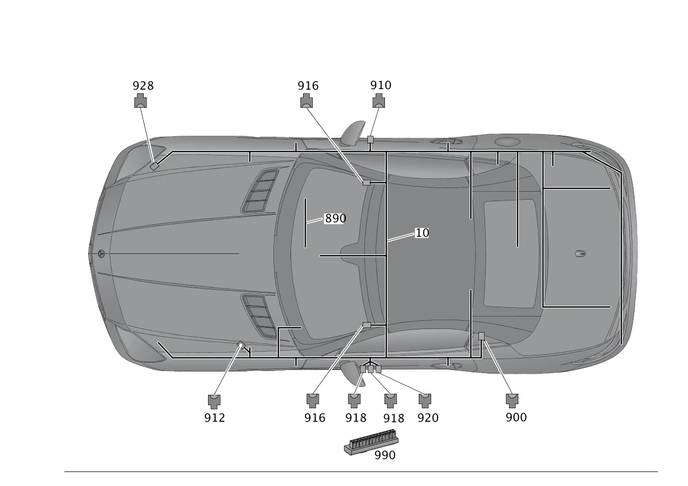

| № | Артикул | Название | Кол. | Примечание | Ограничение |
|---|---|---|---|---|---|
| 10 | A 172 540 98 13 | Электрический жгут (ELEKTRISCHER LEITUNGSSATZ) | 1 | Основной жгут электропроводки системы рамы и пола [001660] В ЖГУТЕ ЭЛЕКТРОПРОВОДКИ ИМЕЮТСЯ СООТВЕТСТВ. СПЕЦ.ИСПОЛНЕНИЯ СОГЛАСНО ЗАВОДСКОМУ НОМЕРУ АВТОМОБИЛЯ [622] ПРИ ЗАКАЗЕ УКАЗАТЬ ИДЕНТ.№ | |
| 20 | A 172 540 29 00 | Электрический жгут (ELEKTRISCHER LEITUNGSSATZ) | 1 | Базовый объем Рулевое управление: Влево | 806 |
| 20 | A 172 540 30 00 | Электрический жгут (ELEKTRISCHER LEITUNGSSATZ) | 1 | Базовый объем Рулевое управление: Вправо | 806 |
| 30 | A 172 540 64 00 | - Электрический жгут (ELEKTRISCHER LEITUNGSSATZ) | 1 | Главный жгут электропроводки спереди Рулевое управление: Влево | 804+054/805 |
| 30 | A 172 540 65 00 | - Электрический жгут (ELEKTRISCHER LEITUNGSSATZ) | 1 | Главный жгут электропроводки спереди Рулевое управление: Вправо | (804+054/805) |
| 70 | A 172 540 76 05 | - Электрический жгут (ELEKTRISCHER LEITUNGSSATZ) | 1 | ЗАДНИЙ ФОНАРЬ Рулевое управление: Влево | 802/803/804/805/806 |
| 70 | A 172 540 94 07 | - Электрический жгут (ELEKTRISCHER LEITUNGSSATZ) | 1 | ЗАДНИЙ ФОНАРЬ Рулевое управление: Вправо | 802/803/804/805/806 |
| 70 | A 172 540 77 05 | - Электрический жгут (ELEKTRISCHER LEITUNGSSATZ) | 1 | ЗАДНИЙ ФОНАРЬ Рулевое управление: Влево | (802/803/804/805/806)+(460/494) |
| 110 | A 172 540 74 00 | - Электрический жгут (ELEKTRISCHER LEITUNGSSATZ) | 1 | ТОПЛИВНАЯ СИСТЕМА Рулевое управление: Влево | (804+054/805/806)+(M274/M276/M152) |
| 110 | A 172 540 74 00 | - Электрический жгут (ELEKTRISCHER LEITUNGSSATZ) | 1 | ТОПЛИВНАЯ СИСТЕМА Рулевое управление: Влево | (807/808/809/800/801)+(M274/M276) |
| 110 | A 172 540 75 00 | - Электрический жгут (ELEKTRISCHER LEITUNGSSATZ) | 1 | ТОПЛИВНАЯ СИСТЕМА Рулевое управление: Вправо | (804+054/805/806)+(M274/M276/M152) |
| 110 | A 172 540 75 00 | - Электрический жгут (ELEKTRISCHER LEITUNGSSATZ) | 1 | ТОПЛИВНАЯ СИСТЕМА Рулевое управление: Вправо | (807/808/809/800/801)+(M274/M276) |
| 120 | A 172 540 55 08 | - Электрический жгут (ELEKTRISCHER LEITUNGSSATZ) | 1 | ФИЛЬТР С АКТИВИРОВАННЫМ УГЛЁМ | (806/807)+(494/460/835) |
| 120 | A 172 540 55 08 | - Электрический жгут (ELEKTRISCHER LEITUNGSSATZ) | 1 | ФИЛЬТР С АКТИВИРОВАННЫМ УГЛЁМ Рулевое управление: Влево | (808/809/800/801)+(494/460/835/830+945) |
| 130 | A 172 540 31 09 | - Электрический жгут (ELEKTRISCHER LEITUNGSSATZ) | 1 | ВЫКЛЮЧАТЕЛЬ ПЕДАЛИ СЦЕПЛЕНИЯ Рулевое управление: Вправо | M274+425+B03 |
| 150 | A 172 540 56 06 | - Электрический жгут (ELEKTRISCHER LEITUNGSSATZ) | 1 | МАСЛЯНЫЙ НАСОС Рулевое управление: Влево | (802/803/804/805)+427+B03 |
| 150 | A 172 540 57 06 | - Электрический жгут (ELEKTRISCHER LEITUNGSSATZ) | 1 | МАСЛЯНЫЙ НАСОС Рулевое управление: Вправо | (802/803/804/805)+427+B03 |
| 160 | A 172 540 49 00 | - Электрический жгут (ELEKTRISCHER LEITUNGSSATZ) | 1 | МЕСТО РАЗЪЕДИНЕНИЯ ДАТЧИКА НУЛЕВОГО ПОЛОЖЕНИЯ Рулевое управление: Влево | (806/807/808/809/800/801)+M274+425 |
| 160 | A 172 540 50 00 | - Электрический жгут (ELEKTRISCHER LEITUNGSSATZ) | 1 | МЕСТО РАЗЪЕДИНЕНИЯ ДАТЧИКА НУЛЕВОГО ПОЛОЖЕНИЯ Рулевое управление: Вправо | (806/807/808/809/800/801)+M274+425 |
| 170 | A 172 540 64 02 | - Электрический жгут (ELEKTRISCHER LEITUNGSSATZ) | 1 | БАГАЖНИК | 4U9 |
| 180 | A 172 540 50 06 | - Электрический жгут (ELEKTRISCHER LEITUNGSSATZ) | 1 | ЭЛЕКТРОПИТАНИЕ БЛОКА ПРЕДОХРАНИТЕЛЕЙ, ВЕНТИЛЯТОРА, ЖЁСТКОГО СКЛАДНОГО ВЕРХА Рулевое управление: Влево | -B03 |
| 180 | A 172 540 60 10 | - Электрический жгут (ELEKTRISCHER LEITUNGSSATZ) | 1 | ЭЛЕКТРОПИТАНИЕ БЛОКОВ ПРЕДОХРАНИТЕЛЕЙ,ВЕНТИЛЯТОРА,ЛЮКА,СПАРЕННОГО.РЕЛЕ;ДАТЧИКА ТОРМОЗНОГО ДАВЛЕНИЯ Рулевое управление: Влево | B03 |
| 180 | A 172 540 51 06 | - Электрический жгут | 1 | ЭЛЕКТРОПИТАНИЕ БЛОКА ПРЕДОХРАНИТЕЛЕЙ, ВЕНТИЛЯТОРА, ЖЁСТКОГО СКЛАДНОГО ВЕРХА Рулевое управление: Вправо [402] БОЛЬШЕ НЕ ПОСТАВЛЯЕТСЯ | -B03 |
| 190 | A 172 540 52 06 | - Электрический жгут (ELEKTRISCHER LEITUNGSSATZ) | 1 | БЛОКИРАТОР РУЛЕВОГО УПРАВЛЕНИЯ Рулевое управление: Влево | (802/803/804/805) |
| 190 | A 172 540 53 06 | - Электрический жгут (ELEKTRISCHER LEITUNGSSATZ) | 1 | БЛОКИРАТОР РУЛЕВОГО УПРАВЛЕНИЯ Рулевое управление: Вправо | (802/803/804/805) |
| 190 | A 172 540 60 00 | - Электрический жгут (ELEKTRISCHER LEITUNGSSATZ) | 1 | БЛОКИРАТОР РУЛЕВОГО УПРАВЛЕНИЯ Рулевое управление: Влево | (804+054/805)+889 |
| 190 | A 172 540 61 00 | - Электрический жгут (ELEKTRISCHER LEITUNGSSATZ) | 1 | БЛОКИРАТОР РУЛЕВОГО УПРАВЛЕНИЯ Рулевое управление: Вправо | (804+054/805)+889 |
| 190 | A 172 540 52 06 | - Электрический жгут (ELEKTRISCHER LEITUNGSSATZ) | 1 | БЛОКИРАТОР РУЛЕВОГО УПРАВЛЕНИЯ Рулевое управление: Влево | 806+(425/427) |
| 190 | A 172 540 52 06 | - Электрический жгут (ELEKTRISCHER LEITUNGSSATZ) | 1 | БЛОКИРАТОР РУЛЕВОГО УПРАВЛЕНИЯ Рулевое управление: Влево | (807/808/809/800/801)+425 |
| 190 | A 172 540 53 06 | - Электрический жгут (ELEKTRISCHER LEITUNGSSATZ) | 1 | БЛОКИРАТОР РУЛЕВОГО УПРАВЛЕНИЯ Рулевое управление: Вправо | 806+(425/427) |
| 190 | A 172 540 53 06 | - Электрический жгут (ELEKTRISCHER LEITUNGSSATZ) | 1 | БЛОКИРАТОР РУЛЕВОГО УПРАВЛЕНИЯ Рулевое управление: Вправо | (807/808/809/800/801)+425 |
| 200 | A 172 540 62 10 | - Электрический жгут (ELEKTRISCHER LEITUNGSSATZ) | 1 | МИНУСОВАЯ КЛЕММА ДОП. АКБ | B03 |
| 230 | A 172 540 45 07 | - Электрический жгут (ELEKTRISCHER LEITUNGSSATZ) | 1 | РЕВЕРСИВНЫЙ НАТЯЖИТЕЛЬ РЕМНЯ БЕЗОПАСНОСТИ Рулевое управление: Влево | (802/803/804/805)+299 |
| 230 | A 172 540 45 00 | - Электрический жгут (ELEKTRISCHER LEITUNGSSATZ) | 1 | РЕВЕРСИВНЫЙ НАТЯЖИТЕЛЬ РЕМНЯ БЕЗОПАСНОСТИ Рулевое управление: Влево | 299 |
| 230 | A 172 540 46 07 | - Электрический жгут (ELEKTRISCHER LEITUNGSSATZ) | 1 | РЕВЕРСИВНЫЙ НАТЯЖИТЕЛЬ РЕМНЯ БЕЗОПАСНОСТИ Рулевое управление: Вправо | (802/803/804/805)+299 |
| 230 | A 172 540 46 00 | - Электрический жгут (ELEKTRISCHER LEITUNGSSATZ) | 1 | РЕВЕРСИВНЫЙ НАТЯЖИТЕЛЬ РЕМНЯ БЕЗОПАСНОСТИ Рулевое управление: Вправо | 299 |
| 260 | A 172 540 20 32 | - Электрический жгут (ELEKTRISCHER LEITUNGSSATZ) | 1 | KEYLESS \- GO Рулевое управление: Влево | 889 |
| 300 | A 172 540 62 00 | - Электрический жгут (ELEKTRISCHER LEITUNGSSATZ) | 1 | АДАПТИВН. СИСТЕМА ДЕМПФИР. (ADS) Рулевое управление: Влево | (804+045/805/806)+483 |
| 300 | A 172 540 63 00 | - Электрический жгут (ELEKTRISCHER LEITUNGSSATZ) | 1 | АДАПТИВН. СИСТЕМА ДЕМПФИР. (ADS) Рулевое управление: Вправо | (804+045/805/806)+483 |
| 310 | A 172 540 47 07 | - Электрический жгут (ELEKTRISCHER LEITUNGSSATZ) | 1 | СИСТЕМА КОНТРОЛЯ ДАВЛЕНИЯ ВОЗДУХА В ШИНАХ (RDK) | 475 |
| 330 | A 172 540 83 06 | - Электрический жгут (ELEKTRISCHER LEITUNGSSATZ) | 1 | СИСТЕМА PARKTRONIC Рулевое управление: Влево | (802/803/804/805)+230+-(U60/233) |
| 330 | A 172 540 84 06 | - Электрический жгут (ELEKTRISCHER LEITUNGSSATZ) | 1 | СИСТЕМА PARKTRONIC Рулевое управление: Вправо | (802/803/804/805)+230+-(U60/233) |
| 330 | A 172 540 55 13 | - Электрический жгут (ELEKTRISCHER LEITUNGSSATZ) | 1 | СИСТЕМА PARKTRONIC Рулевое управление: Вправо | (803/804/805)+230+233+-U60 |
| 340 | A 172 540 93 06 | - Электрический жгут (ELEKTRISCHER LEITUNGSSATZ) | 1 | ПРОВОД МАССЫ Рулевое управление: Влево | 233 |
| 340 | A 172 540 94 06 | - Электрический жгут (ELEKTRISCHER LEITUNGSSATZ) | 1 | ПРОВОД МАССЫ Рулевое управление: Вправо | 233 |
| 340 | A 172 540 56 13 | - Электрический жгут (ELEKTRISCHER LEITUNGSSATZ) | 1 | РАДАР ДИСТАНЦИИ Рулевое управление: Влево | (803/804/805)+233+-(U60/230) |
| 340 | A 172 540 57 13 | - Электрический жгут (ELEKTRISCHER LEITUNGSSATZ) | 1 | РАДАР ДИСТАНЦИИ Рулевое управление: Вправо | (803/804/805)+233+-(U60/230) |
| 340 | A 172 540 40 01 | - Электрический жгут (ELEKTRISCHER LEITUNGSSATZ) | 1 | РАДАР ДИСТАНЦИИ Рулевое управление: Влево [402] БОЛЬШЕ НЕ ПОСТАВЛЯЕТСЯ | (806/807+-M276/(808/809/800/801)+-M016)+239 |
| 340 | A 172 540 41 01 | - Электрический жгут (ELEKTRISCHER LEITUNGSSATZ) | 1 | РАДАР ДИСТАНЦИИ Рулевое управление: Вправо [402] БОЛЬШЕ НЕ ПОСТАВЛЯЕТСЯ | (806/807+-M276/(808/809/800/801)+-M016)+239 |
| 350 | A 172 540 58 00 | - Электрический жгут (ELEKTRISCHER LEITUNGSSATZ) | 1 | Система PARKTRONIC Рулевое управление: Влево | 230 |
| 350 | A 172 540 59 00 | - Электрический жгут (ELEKTRISCHER LEITUNGSSATZ) | 1 | Система PARKTRONIC Рулевое управление: Вправо | 230 |
| 350 | A 172 540 34 03 | - Электрический жгут (ELEKTRISCHER LEITUNGSSATZ) | 1 | Система PARKTRONIC Рулевое управление: Вправо | 230 |
| 350 | A 172 540 40 00 | - Электрический жгут (ELEKTRISCHER LEITUNGSSATZ) | 1 | Система PARKTRONIC Рулевое управление: Вправо | 230+258 |
| 390 | A 172 540 60 05 | - Электрический жгут (ELEKTRISCHER LEITUNGSSATZ) | 1 | Подушка безопасности переднего пассажира Рулевое управление: Влево | |
| 390 | A 172 540 61 05 | - Электрический жгут (ELEKTRISCHER LEITUNGSSATZ) | 1 | Подушка безопасности переднего пассажира Рулевое управление: Вправо | |
| 400 | A 172 540 84 09 | - Электрический жгут (ELEKTRISCHER LEITUNGSSATZ) | 1 | Вентилятор, охлаждение устройства управления Рулевое управление: Вправо | 512/514/527 |
| 400 | A 172 540 17 09 | - Электрический жгут (ELEKTRISCHER LEITUNGSSATZ) | 1 | Вентилятор, охлаждение устройства управления Рулевое управление: Влево | 531 |
| 400 | A 172 540 63 13 | - Электрический жгут (ELEKTRISCHER LEITUNGSSATZ) | 1 | Вентилятор, охлаждение устройства управления Рулевое управление: Вправо | 531 |
| 410 | A 172 540 93 05 | - Электрический жгут (ELEKTRISCHER LEITUNGSSATZ) | 1 | Панель управления к разъему температурного датчика испарителя Рулевое управление: Влево | 580/581 |
| 410 | A 172 540 97 07 | - Электрический жгут (ELEKTRISCHER LEITUNGSSATZ) | 1 | Панель управления к разъему температурного датчика испарителя Рулевое управление: Вправо | 580/581 |
| 420 | A 172 540 72 06 | - Электрический жгут (ELEKTRISCHER LEITUNGSSATZ) | 1 | Система противоугонной сигнализации Рулевое управление: Вправо | 551 |
| 430 | A 172 540 73 06 | - Электрический жгут (ELEKTRISCHER LEITUNGSSATZ) | 1 | СОЕДИНЕНИЕ "МАССЫ" Рулевое управление: Влево | 551 |
| 430 | A 172 540 74 06 | - Электрический жгут (ELEKTRISCHER LEITUNGSSATZ) | 1 | СОЕДИНЕНИЕ "МАССЫ" Рулевое управление: Вправо | 551 |
| 440 | A 172 540 69 06 | - Электрический жгут (ELEKTRISCHER LEITUNGSSATZ) | 1 | Система противоугонной сигнализации Рулевое управление: Влево | 882 |
| 440 | A 172 540 70 06 | - Электрический жгут (ELEKTRISCHER LEITUNGSSATZ) | 1 | Система противоугонной сигнализации Рулевое управление: Вправо | 882 |
| 450 | A 172 540 79 06 | - Электрический жгут (ELEKTRISCHER LEITUNGSSATZ) | 1 | Система противоугонной сигнализации Рулевое управление: Влево | (802/803/804/805)+551 |
| 450 | A 172 540 79 06 | - Электрический жгут (ELEKTRISCHER LEITUNGSSATZ) | 1 | Система противоугонной сигнализации Рулевое управление: Влево | (806/807/808/809/800/801)+551 |
| 450 | A 172 540 44 13 | - Электрический жгут (ELEKTRISCHER LEITUNGSSATZ) | 1 | Система противоугонной сигнализации Рулевое управление: Влево | (802/803/804/805)+(U60/U60+B03) |
| 470 | A 172 540 75 08 | - Электрический жгут (ELEKTRISCHER LEITUNGSSATZ) | 1 | Вентиляция зоны головы Рулевое управление: Влево | 403/499 |
| 470 | A 172 540 76 08 | - Электрический жгут (ELEKTRISCHER LEITUNGSSATZ) | 1 | Вентиляция зоны головы Рулевое управление: Вправо | 403/499 |
| 480 | A 172 540 84 08 | - Электрический жгут (ELEKTRISCHER LEITUNGSSATZ) | 1 | Вентиляция зоны головы Рулевое управление: Влево | (403/499)+-275 |
| 480 | A 172 540 85 08 | - Электрический жгут (ELEKTRISCHER LEITUNGSSATZ) | 1 | Вентиляция зоны головы Рулевое управление: Вправо | (403/499)+-275 |
| 480 | A 172 540 81 08 | - Электрический жгут (ELEKTRISCHER LEITUNGSSATZ) | 1 | Вентиляция зоны головы Рулевое управление: Влево | 275+(403/499) |
| 490 | A 172 540 86 08 | - Электрический жгут (ELEKTRISCHER LEITUNGSSATZ) | 1 | Вентиляция зоны головы Рулевое управление: Влево | (403/499)+-275 |
| 490 | A 172 540 87 08 | - Электрический жгут (ELEKTRISCHER LEITUNGSSATZ) | 1 | Вентиляция зоны головы Рулевое управление: Вправо | (403/499)+-275 |
| 490 | A 172 540 82 08 | - Электрический жгут (ELEKTRISCHER LEITUNGSSATZ) | 1 | Вентиляция зоны головы Рулевое управление: Влево | 275+(403/499) |
| 490 | A 172 540 83 08 | - Электрический жгут (ELEKTRISCHER LEITUNGSSATZ) | 1 | Вентиляция зоны головы Рулевое управление: Вправо | 275+(403/499) |
| 500 | A 172 540 93 08 | - Электрический жгут (ELEKTRISCHER LEITUNGSSATZ) | 1 | Подогрев сидений Рулевое управление: Влево | 873+-275 |
| 500 | A 172 540 94 08 | - Электрический жгут (ELEKTRISCHER LEITUNGSSATZ) | 1 | Подогрев сидений Рулевое управление: Вправо | 873+-275 |
| 500 | A 172 540 79 08 | - Электрический жгут (ELEKTRISCHER LEITUNGSSATZ) | 1 | Подогрев сидений Рулевое управление: Влево | 275+873 |
| 500 | A 172 540 80 08 | - Электрический жгут (ELEKTRISCHER LEITUNGSSATZ) | 1 | Подогрев сидений Рулевое управление: Вправо | 275+873 |
| 510 | A 172 540 74 08 | - Электрический жгут (ELEKTRISCHER LEITUNGSSATZ) | 1 | ШИНА ДАННЫХ CAN И МАССА К БЛОКУ УПРАВЛЕНИЯ СИДЕНЬЕМ Рулевое управление: Вправо | 275 |
| 520 | A 172 540 41 05 | - Электрический жгут (ELEKTRISCHER LEITUNGSSATZ) | 1 | ДАТЧИК ДОЖДЯ | |
| 530 | A 172 540 91 07 | - Электрический жгут (ELEKTRISCHER LEITUNGSSATZ) | 1 | ПРОСТРАНСТВО ДЛЯ НОГ И ПОДСВЕТКА ЦЕНТРАЛЬНОЙ КОНСОЛИ Рулевое управление: Вправо | (804/805/806)+876 |
| 540 | A 172 540 93 07 | - Электрический жгут (ELEKTRISCHER LEITUNGSSATZ) | 1 | ПЛАФОН ОСВЕЩЕНИЯ САЛОНА Рулевое управление: Вправо | |
| 550 | A 172 540 48 08 | - Электрический жгут (ELEKTRISCHER LEITUNGSSATZ) | 1 | АНАЛОГ.ЧАСЫ Рулевое управление: Влево | 246 |
| 550 | A 172 540 49 08 | - Электрический жгут (ELEKTRISCHER LEITUNGSSATZ) | 1 | АНАЛОГ.ЧАСЫ Рулевое управление: Вправо | 246 |
| 560 | A 172 540 05 06 | - Электрический жгут (ELEKTRISCHER LEITUNGSSATZ) | 1 | АНТЕННА Рулевое управление: Вправо | |
| 560 | A 172 540 55 07 | - Электрический жгут (ELEKTRISCHER LEITUNGSSATZ) | 1 | Антенный усилитель к блоку управления A2/19\-A94/1\-A94/2\-N143 Рулевое управление: Влево | (802/803/804/805/806)+865 |
| 560 | A 172 540 39 02 | - Электрический жгут (ELEKTRISCHER LEITUNGSSATZ) | 1 | Антенный усилитель к блоку управления Рулевое управление: Влево | (807/808/809/800/801)+865 |
| 560 | A 172 540 56 07 | - Электрический жгут (ELEKTRISCHER LEITUNGSSATZ) | 1 | Антенный усилитель к блоку управления A2/19\-A94/1\-A94/2\-N143 Рулевое управление: Вправо | (802/803/804/805/806)+865 |
| 560 | A 172 540 40 02 | - Электрический жгут (ELEKTRISCHER LEITUNGSSATZ) | 1 | Антенный усилитель к блоку управления Рулевое управление: Вправо | (807/808/809/800/801)+865 |
| 560 | A 172 540 60 03 | - Электрический жгут (ELEKTRISCHER LEITUNGSSATZ) | 1 | Антенный усилитель к блоку управления Рулевое управление: Влево | (807/808/809/800/801)+865+835+197 |
| 560 | A 172 540 61 03 | - Электрический жгут (ELEKTRISCHER LEITUNGSSATZ) | 1 | Антенный усилитель к блоку управления Рулевое управление: Вправо | (807/808/809/800/801)+865+835+197 |
| 570 | A 172 540 08 06 | - Электрический жгут (ELEKTRISCHER LEITUNGSSATZ) | 1 | Панель управления к центральному дисплею A40/3\-A40/8 | 802/803/804/805/806 |
| 570 | A 172 540 97 02 | - Электрический жгут (ELEKTRISCHER LEITUNGSSATZ) | 1 | Панель управления к центральному дисплею | 807/808/809/800/801 |
| 580 | A 172 540 91 09 | - Электрический жгут (ELEKTRISCHER LEITUNGSSATZ) | 1 | АНТЕННЫЙ РАЗВЕТВИТЕЛЬ К РАЗЪЁМУ ЭЛЕКТРОПРОВОДКИ НАВИГАЦИОННОЙ СИСТЕМЫ A2/98\-X1/61 Рулевое управление: Влево | 508/509 |
| 580 | A 172 540 92 09 | - Электрический жгут (ELEKTRISCHER LEITUNGSSATZ) | 1 | АНТЕННЫЙ РАЗВЕТВИТЕЛЬ К РАЗЪЁМУ ЭЛЕКТРОПРОВОДКИ НАВИГАЦИОННОЙ СИСТЕМЫ A2/98\-X1/61 Рулевое управление: Вправо | 508/509 |
| 585 | A 172 540 87 02 | - Электрический жгут (ELEKTRISCHER LEITUNGSSATZ) | 1 | АНТЕННЫЙ ПРОВОД, БЛОК УПРАВЛЕНИЯ К МЕСТУ РАЗЪЕДИНЕНИЯ 1860MM | (807/808/809/800/801)+362 |
| 585 | A 172 540 88 02 | - Электрический жгут (ELEKTRISCHER LEITUNGSSATZ) | 1 | ОТ РАЗЪЁМА АНТЕННЫ GPS К МУЛЬТИМЕДИЙНОМУ МОДУЛЮ 1975MM | (807/808)+(360/362)+(386/505/536)+-(522/531) |
| 585 | A 172 540 88 02 | - Электрический жгут (ELEKTRISCHER LEITUNGSSATZ) | 1 | ОТ РАЗЪЁМА АНТЕННЫ GPS К МУЛЬТИМЕДИЙНОМУ МОДУЛЮ 1975MM | (807/808)+(360+505/(362+505)+(379/386/536))+-(522/531) |
| 585 | A 172 540 07 03 | - Электрический жгут (ELEKTRISCHER LEITUNGSSATZ) | 1 | ОТ АНТЕННОГО РАЗВЕТВИТЕЛЯ К МУЛЬТИМЕДИЙНОМУ МОДУЛЮ 2010MM Рулевое управление: Влево | (807/808)+362+522+830+-531 |
| 585 | A 172 540 88 02 | - Электрический жгут (ELEKTRISCHER LEITUNGSSATZ) | 1 | ОТ АНТЕННОГО РАЗВЕТВИТЕЛЯ К МУЛЬТИМЕДИЙНОМУ МОДУЛЮ 1975MM | 362+505+-(802/803/804/805/806/807/808/522/531) |
| 585 | A 172 540 07 03 | - Электрический жгут (ELEKTRISCHER LEITUNGSSATZ) | 1 | ОТ АНТЕННОГО РАЗВЕТВИТЕЛЯ К МУЛЬТИМЕДИЙНОМУ МОДУЛЮ 2010MM Рулевое управление: Влево | 362+522+830+-(802/803/804/805/806/807/808/531) |
| 590 | A 172 540 39 07 | - Электрический жгут (ELEKTRISCHER LEITUNGSSATZ) | 1 | ОТ КОМПЕНСАТОРА К МЕСТУ РАЗЪЕДИНЕНИЯ A28/3\-X39/37 Рулевое управление: Влево | 386/379 |
| 590 | A 172 540 00 06 | - Электрический жгут (ELEKTRISCHER LEITUNGSSATZ) | 1 | ОТ КОМПЕНСАТОРА К МЕСТУ РАЗЪЕДИНЕНИЯ A28/3\-X39/37 Рулевое управление: Вправо | 386/379 |
| 590 | A 172 540 07 06 | - Электрический жгут (ELEKTRISCHER LEITUNGSSATZ) | 1 | Антенный провод, блок управления к разъему N87/5\-X1/42 Рулевое управление: Влево | (802/803/804/805/806)+536 |
| 590 | A 172 540 36 13 | - Электрический жгут (ELEKTRISCHER LEITUNGSSATZ) | 1 | Антенный провод, блок управления к разъему A40/3\-X1/61 Рулевое управление: Влево | (803/804/805/806/807/808/809)+(508/509) |
| 590 | A 172 540 37 13 | - Электрический жгут (ELEKTRISCHER LEITUNGSSATZ) | 1 | Антенный провод, блок управления к разъему A40/3\-X1/61 Рулевое управление: Вправо | (803/804/805/806/807/808/809)+(508/509) |
| 595 | A 172 540 89 02 | - Электрический жгут (ELEKTRISCHER LEITUNGSSATZ) | 1 | ОТ РАЗЪЁМА GPS В ПЕРЕДНЕЙ ПАНЕЛИ К МУЛЬТИМЕДИЙНОМУ МОДУЛЮ 4515MM | (807/808)+360+-(522/531) |
| 600 | A 172 540 14 06 | - Электрический жгут (ELEKTRISCHER LEITUNGSSATZ) | 1 | АНТЕННЫЙ РАЗВЕТВИТЕЛЬ К АНТЕННОМУ УСИЛИТЕЛЮ И РАЗЪЁМ ЭЛЕКТРОПРОВОДКИ НАВИГАЦ. СИСТЕМЫ К РАЗЪЁМУ ЭЛЕКТРОПРОВОДКИ A2/98\-A2/18; X1/61\-X39/35 Рулевое управление: Влево | (802/803/804/805/806)+(508/509) |
| 600 | A 172 540 15 06 | - Электрический жгут (ELEKTRISCHER LEITUNGSSATZ) | 1 | АНТЕННЫЙ РАЗВЕТВИТЕЛЬ К АНТЕННОМУ УСИЛИТЕЛЮ И РАЗЪЁМ ЭЛЕКТРОПРОВОДКИ НАВИГАЦ. СИСТЕМЫ К РАЗЪЁМУ ЭЛЕКТРОПРОВОДКИ Рулевое управление: Вправо | (802/803/804/805/806)+(508/509) |
| 605 | A 172 540 08 03 | - Электрический жгут (ELEKTRISCHER LEITUNGSSATZ) | 1 | АНТЕННЫЙ РАЗВЕТВИТЕЛЬ К БЛОКУ УПРАВЛЕНИЯ 3980MM | (807/808/809/800/801)+362+522+830 |
| 605 | A 172 540 10 03 | - Электрический жгут (ELEKTRISCHER LEITUNGSSATZ) | 1 | ОТ РАЗЪЁМА АНТЕННЫ GPS К БЛОК\-ПАНЕЛИ УПРАВЛЕНИЯ 3860MM | (807/808/809/800/801)+522+(362/379/386/536) |
| 605 | A 172 540 11 03 | - Электрический жгут (ELEKTRISCHER LEITUNGSSATZ) | 1 | ОТ РАЗЪЁМА АНТЕННЫ GPS К БЛОК\-ПАНЕЛИ УПРАВЛЕНИЯ 3950MM | (807/808/809/800/801)+531+(362/379/386/536) |
| 610 | A 172 540 41 07 | - Электрический жгут (ELEKTRISCHER LEITUNGSSATZ) | 1 | АНТЕННА К БЛОКУ УПРАВЛЕНИЯ N69/5\-X1/51 Рулевое управление: Влево | (802/803/804/805)+889+-(762/763) |
| 610 | A 172 540 42 07 | - Электрический жгут (ELEKTRISCHER LEITUNGSSATZ) | 1 | АНТЕННА К БЛОКУ УПРАВЛЕНИЯ N69/5\-X1/51 Рулевое управление: Вправо | (802/803/804/805)+889+-(762/763) |
| 610 | A 172 540 43 07 | - Электрический жгут (ELEKTRISCHER LEITUNGSSATZ) | 1 | АНТЕННА К БЛОКУ УПРАВЛЕНИЯ N69/5\-X1/51 Рулевое управление: Влево | (802/803/804/805)+889+(762/763) |
| 610 | A 172 540 44 07 | - Электрический жгут (ELEKTRISCHER LEITUNGSSATZ) | 1 | АНТЕННА К БЛОКУ УПРАВЛЕНИЯ N69/5\-X1/51 Рулевое управление: Вправо | (802/803/804/805)+889+(762/763) |
| 620 | A 172 540 17 06 | - Электрический жгут (ELEKTRISCHER LEITUNGSSATZ) | 1 | Антенный разветвитель к панели управления FM1/2; A2/19\-A2/98\-A40/3 Рулевое управление: Влево | (802/803/804/805/806)+(508/509) |
| 620 | A 172 540 56 08 | - Электрический жгут (ELEKTRISCHER LEITUNGSSATZ) | 1 | Антенный разветвитель к панели управления FM1/2; A2/19\-A2/98\-A40/3 Рулевое управление: Вправо | (802/803/804/805/806)+(508/509) |
| 620 | A 172 540 14 03 | - Электрический жгут (ELEKTRISCHER LEITUNGSSATZ) | 1 | Антенный разветвитель к панели управления FM A2/18; A2/19\-A40/3 Рулевое управление: Влево | (807/808/809/800/801)+(505/522) |
| 620 | A 172 540 15 03 | - Электрический жгут (ELEKTRISCHER LEITUNGSSATZ) | 1 | Антенный разветвитель к панели управления FM A2/18; A2/19\-A40/3 Рулевое управление: Вправо | (807/808/809/800/801)+(505/522) |
| 620 | A 172 540 12 03 | - Электрический жгут (ELEKTRISCHER LEITUNGSSATZ) | 1 | Антенный разветвитель к панели управления FM A2/18; A2/19\-A40/3 Рулевое управление: Влево | (807/808/809/800/801)+531 |
| 620 | A 172 540 13 03 | - Электрический жгут (ELEKTRISCHER LEITUNGSSATZ) | 1 | Антенный разветвитель к панели управления FM A2/18; A2/19\-A40/3 Рулевое управление: Вправо | (807/808/809/800/801)+531 |
| 630 | A 172 540 04 06 | - Электрический жгут (ELEKTRISCHER LEITUNGSSATZ) | 1 | АНТЕННА AM; A2/18 \- A2/67 Рулевое управление: Влево | |
| 640 | A 172 540 78 09 | - Электрический жгут (ELEKTRISCHER LEITUNGSSATZ) | 1 | АНТЕННА СИСТЕМЫ АВАРИЙНОГО ВЫЗОВА A2/52\-N123/4\-X39/54 Рулевое управление: Влево | (802/803/804/805/806)+(348/359) |
| 640 | A 172 540 62 13 | - Электрический жгут (ELEKTRISCHER LEITUNGSSATZ) | 1 | АНТЕННЫЙ РАЗВЕТВИТЕЛЬ К РАЗЪЁМУ ЭЛЕКТРОПРОВОДКИ НАВИГАЦИОННОЙ СИСТЕМЫ A2/53\-X39/35 | (802/803/804/805/806)+(508/509)+348 |
| 650 | A 172 540 64 10 | - Электрический жгут (ELEKTRISCHER LEITUNGSSATZ) | 1 | БЛОК\-ПАНЕЛЬ УПРАВЛЕНИЯ К ТВ\-ТЮНЕРУ A40/3\-N143 Рулевое управление: Влево | (802/803/804/805/806)+537 |
| 650 | A 172 540 35 02 | - Электрический жгут (ELEKTRISCHER LEITUNGSSATZ) | 1 | БЛОК\-ПАНЕЛЬ УПРАВЛЕНИЯ К ТВ\-ТЮНЕРУ A40/3\-N143 Рулевое управление: Влево | (807/808/809/800/801)+537 |
| 650 | A 172 540 65 10 | - Электрический жгут (ELEKTRISCHER LEITUNGSSATZ) | 1 | БЛОК\-ПАНЕЛЬ УПРАВЛЕНИЯ К ТВ\-ТЮНЕРУ A40/3\-N143 Рулевое управление: Вправо | (802/803/804/805/806)+537 |
| 650 | A 172 540 36 02 | - Электрический жгут (ELEKTRISCHER LEITUNGSSATZ) | 1 | БЛОК\-ПАНЕЛЬ УПРАВЛЕНИЯ К ТВ\-ТЮНЕРУ A40/3\-N143 Рулевое управление: Вправо | (807/808/809/800/801)+537 |
| 650 | A 172 540 18 06 | - Электрический жгут | 1 | БЛОК\-ПАНЕЛЬ УПРАВЛЕНИЯ К ТВ\-ТЮНЕРУ A40/3\-N143 Рулевое управление: Влево | (802/803/804/805/806)+865 |
| 650 | A 172 540 37 02 | - Электрический жгут (ELEKTRISCHER LEITUNGSSATZ) | 1 | БЛОК\-ПАНЕЛЬ УПРАВЛЕНИЯ К ТВ\-ТЮНЕРУ A40/3\-N143 Рулевое управление: Влево | (807/808/809/800/801)+865 |
| 650 | A 172 540 19 06 | - Электрический жгут | 1 | БЛОК\-ПАНЕЛЬ УПРАВЛЕНИЯ К ТВ\-ТЮНЕРУ A40/3\-N143 Рулевое управление: Вправо | (802/803/804/805/806)+865 |
| 650 | A 172 540 38 02 | - Электрический жгут (ELEKTRISCHER LEITUNGSSATZ) | 1 | БЛОК\-ПАНЕЛЬ УПРАВЛЕНИЯ К ТВ\-ТЮНЕРУ A40/3\-N143 Рулевое управление: Вправо | (807/808/809/800/801)+865 |
| 650 | A 172 540 80 09 | - Электрический жгут (ELEKTRISCHER LEITUNGSSATZ) | 1 | БЛОК\-ПАНЕЛЬ УПРАВЛЕНИЯ К ШТЕКЕРНОМУ СОЕДИНЕНИЮ UCI A40/3\-X18/69 Рулевое управление: Влево | (802/803/804/805/806)+518+(512/514/527) |
| 650 | A 172 540 38 07 | - Электрический жгут (ELEKTRISCHER LEITUNGSSATZ) | 1 | БЛОК\-ПАНЕЛЬ УПРАВЛЕНИЯ К ШТЕКЕРНОМУ СОЕДИНЕНИЮ UCI A40/3\-X18/69 Рулевое управление: Вправо | (802/803/804/805/806)+518+(512/514/527) |
| 660 | A 172 540 53 13 | - Электрический жгут (ELEKTRISCHER LEITUNGSSATZ) | 1 | ШТЕКЕРНОЕ СОЕДИНЕНИЕ АНТЕННЫ GPS К БЛОКУ УПРАВЛЕНИЯ СИСТЕМЫ АВАРИЙНОГО ВЫЗОВА X39/3 \-N123/4 Рулевое управление: Влево | (803/804/805/806)+348 |
| 660 | A 172 540 52 13 | - Электрический жгут (ELEKTRISCHER LEITUNGSSATZ) | 1 | ШТЕКЕРНОЕ СОЕДИНЕНИЕ АНТЕННЫ GPS К БЛОКУ УПРАВЛЕНИЯ СИСТЕМЫ АВАРИЙНОГО ВЫЗОВА X39/3 \-N123/4 Рулевое управление: Влево | (803/804/805/806)+((508/509/512/514/527)+348) |
| 670 | A 172 540 01 06 | - Электрический жгут (ELEKTRISCHER LEITUNGSSATZ) | 1 | БЛОК\-ПАНЕЛЬ УПРАВЛЕНИЯ К ШТЕКЕРНОМУ СОЕДИНЕНИЮ АНТЕННЫ GPS A40/3\-X39/35 Рулевое управление: Влево | (802/803/804/805/806)+(512/514/527)+(386/536)+-(348/359) |
| 670 | A 172 540 02 06 | - Электрический жгут (ELEKTRISCHER LEITUNGSSATZ) | 1 | БЛОК\-ПАНЕЛЬ УПРАВЛЕНИЯ К ШТЕКЕРНОМУ СОЕДИНЕНИЮ АНТЕННЫ GPS A40/3\-X39/35 Рулевое управление: Вправо | (802/803/804/805/806)+(512/514/527)+386+-(348/359) |
| 670 | A 172 540 03 06 | - Электрический жгут (ELEKTRISCHER LEITUNGSSATZ) | 1 | БЛОК\-ПАНЕЛЬ УПРАВЛЕНИЯ К ШТЕКЕРНОМУ СОЕДИНЕНИЮ АНТЕННЫ GPS | (802/803/804/805/806)+(348/359)+(512/514/527) |
| 670 | A 172 540 82 09 | - Электрический жгут (ELEKTRISCHER LEITUNGSSATZ) | 1 | АНТЕННЫЙ ПРОВОД GPS Рулевое управление: Влево | (802/803/804/805/806)+(508/509)+386+-(348/359) |
| 670 | A 172 540 81 09 | - Электрический жгут (ELEKTRISCHER LEITUNGSSATZ) | 1 | АНТЕННЫЙ ПРОВОД GPS Рулевое управление: Вправо | (802/803/804/805/806)+(508/509)+386+-(348/359) |
| 680 | A 172 540 42 08 | - Электрический жгут (ELEKTRISCHER LEITUNGSSATZ) | 1 | АНТЕННА К БЛОКУ УПРАВЛЕНИЯ Рулевое управление: Влево | 498 |
| 680 | A 172 540 31 06 | - Электрический жгут | 1 | АНТЕННА К БЛОКУ УПРАВЛЕНИЯ Рулевое управление: Вправо | 498 |
| 690 | A 172 540 69 07 | - Электрический жгут (ELEKTRISCHER LEITUNGSSATZ) | 1 | АНТЕНН. ПРОВОД FM; A40/3\-A2/18\-A2/19 Рулевое управление: Влево | (802/803/804/805/806)+(510/512/514/523/527)+-(508/509) |
| 690 | A 172 540 70 07 | - Электрический жгут (ELEKTRISCHER LEITUNGSSATZ) | 1 | АНТЕНН. ПРОВОД FM; A40/3\-A2/18\-A2/19 Рулевое управление: Вправо | (802/803/804/805/806)+(510/512/514/523/527)+-(508/509) |
| 700 | A 172 540 73 07 | - Электрический жгут (ELEKTRISCHER LEITUNGSSATZ) | 1 | Динамики спереди и сзади Рулевое управление: Влево | 802/803/804/805/806 |
| 700 | A 172 540 73 07 | - Электрический жгут (ELEKTRISCHER LEITUNGSSATZ) | 1 | Динамики спереди и сзади Рулевое управление: Влево | (807/808/809/800/801)+B63 |
| 700 | A 172 540 74 07 | - Электрический жгут (ELEKTRISCHER LEITUNGSSATZ) | 1 | Динамики спереди и сзади Рулевое управление: Вправо | 802/803/804/805/806 |
| 700 | A 172 540 74 07 | - Электрический жгут (ELEKTRISCHER LEITUNGSSATZ) | 1 | Динамики спереди и сзади Рулевое управление: Вправо | (807/808/809/800/801)+B63 |
| 700 | A 172 540 77 07 | - Электрический жгут (ELEKTRISCHER LEITUNGSSATZ) | 1 | Динамики спереди и сзади Рулевое управление: Влево | (802/803/804/805/806)+810 |
| 700 | A 172 540 77 07 | - Электрический жгут (ELEKTRISCHER LEITUNGSSATZ) | 1 | Динамики спереди и сзади Рулевое управление: Влево | (807/808/809/800/801)+(810/810+B63) |
| 700 | A 172 540 78 07 | - Электрический жгут (ELEKTRISCHER LEITUNGSSATZ) | 1 | Динамики спереди и сзади Рулевое управление: Вправо | (802/803/804/805/806)+810 |
| 700 | A 172 540 78 07 | - Электрический жгут (ELEKTRISCHER LEITUNGSSATZ) | 1 | Динамики спереди и сзади Рулевое управление: Вправо | (807/808/809/800/801)+(810/810+B63) |
| 710 | A 172 540 79 07 | - Электрический жгут (ELEKTRISCHER LEITUNGSSATZ) | 1 | ПРОВОД МАССЫ Рулевое управление: Влево | 810 |
| 710 | A 172 540 80 07 | - Электрический жгут (ELEKTRISCHER LEITUNGSSATZ) | 1 | ПРОВОД МАССЫ Рулевое управление: Вправо | 810 |
| 715 | A 172 540 93 02 | - Электрический жгут (ELEKTRISCHER LEITUNGSSATZ) | 1 | ПРОВОД СИГНАЛА АКТИВАЦИИ ДЛЯ МУЛЬТИМЕДИЙНОГО ИНТЕРФЕЙСА | 807+360+522+B54 |
| 715 | A 172 540 93 02 | - Электрический жгут (ELEKTRISCHER LEITUNGSSATZ) | 1 | ПРОВОД СИГНАЛА АКТИВАЦИИ ДЛЯ МУЛЬТИМЕДИЙНОГО ИНТЕРФЕЙСА | (807/808)+(B63/360+522+367) |
| 715 | A 172 540 93 02 | - Электрический жгут (ELEKTRISCHER LEITUNGSSATZ) | 1 | ПРОВОД СИГНАЛА АКТИВАЦИИ ДЛЯ МУЛЬТИМЕДИЙНОГО ИНТЕРФЕЙСА | (B63/362+522+367)+-(802/803/804/805/806/807/808) |
| 720 | A 172 540 53 07 | - Электрический жгут (ELEKTRISCHER LEITUNGSSATZ) | 1 | ТВ\-ТЮНЕР Рулевое управление: Влево | (802/803/804/805/806)+(863/865) |
| 720 | A 172 540 54 07 | - Электрический жгут (ELEKTRISCHER LEITUNGSSATZ) | 1 | ТВ\-ТЮНЕР Рулевое управление: Вправо | (802/803/804/805/806)+(863/865) |
| 725 | A 172 540 80 02 | Электрический жгут (ELEKTRISCHER LEITUNGSSATZ) | 1 | ОТ АУДИОУСИЛИТЕЛЯ К БЛОКУ УПРАВЛЕНИЯ СИСТЕМЫ АВАРИЙНОГО ВЫЗОВА Рулевое управление: Вправо | (807/808/809/800/801)+(360/362)+810 |
| 725 | A 172 540 84 02 | Электрический жгут (ELEKTRISCHER LEITUNGSSATZ) | 1 | ОТ АУДИОУСИЛИТЕЛЯ К БЛОКУ УПРАВЛЕНИЯ СИСТЕМЫ АВАРИЙНОГО ВЫЗОВА Рулевое управление: Вправо | (807/808/809/800/801)+(360/362)+810+9U1 |
| 730 | A 212 440 13 53 | - Электрический жгут (ELEKTRISCHER LEITUNGSSATZ) | 1 | РАЗЪЕМ USB | |
| 730 | A 172 540 95 02 | - Электрический жгут (ELEKTRISCHER LEITUNGSSATZ) | 1 | USB\-СПЛИТТЕР Рулевое управление: Влево | 807+360+522+B54 |
| 730 | A 172 540 95 02 | - Электрический жгут (ELEKTRISCHER LEITUNGSSATZ) | 1 | USB\-СПЛИТТЕР Рулевое управление: Влево | (807/808)+360+522+367 |
| 730 | A 172 540 96 02 | - Электрический жгут (ELEKTRISCHER LEITUNGSSATZ) | 1 | USB\-СПЛИТТЕР Рулевое управление: Вправо | 807+360+522+B54 |
| 730 | A 172 540 96 02 | - Электрический жгут (ELEKTRISCHER LEITUNGSSATZ) | 1 | USB\-СПЛИТТЕР Рулевое управление: Вправо | (807/808)+360+522+367 |
| 730 | A 172 540 95 02 | - Электрический жгут (ELEKTRISCHER LEITUNGSSATZ) | 1 | USB\-СПЛИТТЕР Рулевое управление: Влево | (362+522+367)+-(802/803/804/805/806/807/808) |
| 730 | A 172 540 96 02 | - Электрический жгут (ELEKTRISCHER LEITUNGSSATZ) | 1 | USB\-СПЛИТТЕР Рулевое управление: Вправо | (362+522+367)+-(802/803/804/805/806/807/808) |
| 730 | A 172 540 62 03 | - Электрический жгут (ELEKTRISCHER LEITUNGSSATZ) | 1 | USB\-СПЛИТТЕР | -(802/803/804/805/806/807) |
| 735 | A 172 540 86 02 | - Электрический жгут (ELEKTRISCHER LEITUNGSSATZ) | 1 | ОТ СИСТЕМЫ АВАРИЙНОГО ВЫЗОВА К USP\-СПЛИТТЕРУ Рулевое управление: Влево | 807+360+522+B54 |
| 735 | A 172 540 86 02 | - Электрический жгут (ELEKTRISCHER LEITUNGSSATZ) | 1 | ОТ СИСТЕМЫ АВАРИЙНОГО ВЫЗОВА К USP\-СПЛИТТЕРУ Рулевое управление: Влево | (807/808)+360+522+367 |
| 735 | A 172 540 90 02 | - Электрический жгут (ELEKTRISCHER LEITUNGSSATZ) | 1 | ОТ СИСТЕМЫ АВАРИЙНОГО ВЫЗОВА К USP\-СПЛИТТЕРУ Рулевое управление: Вправо | 807+360+522+B54 |
| 735 | A 172 540 90 02 | - Электрический жгут (ELEKTRISCHER LEITUNGSSATZ) | 1 | ОТ СИСТЕМЫ АВАРИЙНОГО ВЫЗОВА К USP\-СПЛИТТЕРУ Рулевое управление: Вправо | (807/808)+360+522+367 |
| 735 | A 172 540 06 03 | - Электрический жгут (ELEKTRISCHER LEITUNGSSATZ) | 1 | ОТ СИСТЕМЫ АВАРИЙНОГО ВЫЗОВА К USP\-СПЛИТТЕРУ | 807+360+531+B54 |
| 735 | A 172 540 06 03 | - Электрический жгут (ELEKTRISCHER LEITUNGSSATZ) | 1 | ОТ СИСТЕМЫ АВАРИЙНОГО ВЫЗОВА К USP\-СПЛИТТЕРУ | (807/808)+360+531+367 |
| 735 | A 172 540 86 02 | - Электрический жгут (ELEKTRISCHER LEITUNGSSATZ) | 1 | ОТ СИСТЕМЫ АВАРИЙНОГО ВЫЗОВА К USP\-СПЛИТТЕРУ Рулевое управление: Влево | (362+522+367)+-(802/803/804/805/806/807/808) |
| 735 | A 172 540 90 02 | - Электрический жгут (ELEKTRISCHER LEITUNGSSATZ) | 1 | ОТ СИСТЕМЫ АВАРИЙНОГО ВЫЗОВА К USP\-СПЛИТТЕРУ Рулевое управление: Вправо | (362+522+367)+-(802/803/804/805/806/807/808) |
| 735 | A 172 540 06 03 | - Электрический жгут (ELEKTRISCHER LEITUNGSSATZ) | 1 | ОТ СИСТЕМЫ АВАРИЙНОГО ВЫЗОВА К USP\-СПЛИТТЕРУ | (362+531+367)+-(802/803/804/805/806/807/808) |
| 740 | A 172 540 76 07 | - Электрический жгут (ELEKTRISCHER LEITUNGSSATZ) | 1 | БУ СПУТН. АУДИОСИСТЕМЫ США Рулевое управление: Влево | (802/803/804/805/806)+536 |
| 750 | A 172 540 65 07 | - Электрический жгут (ELEKTRISCHER LEITUNGSSATZ) | 1 | ЭЛЕКТРОПИТАНИЕ БЛОКА УПРАВЛЕНИЯ DAB 00257 Рулевое управление: Влево | (802/803/804/805/806)+537 |
| 750 | A 172 540 66 07 | - Электрический жгут (ELEKTRISCHER LEITUNGSSATZ) | 1 | ЭЛЕКТРОПИТАНИЕ БЛОКА УПРАВЛЕНИЯ DAB 00257 Рулевое управление: Вправо | (802/803/804/805/806)+537 |
| 770 | A 172 540 75 07 | Электрический жгут (ELEKTRISCHER LEITUNGSSATZ) | 1 | СИСТЕМА АВАРИЙНОГО ВЫЗОВА 00257 Рулевое управление: Влево | (802/803/804/805/806)+(348/359) |
| 770 | A 172 540 84 07 | Электрический жгут (ELEKTRISCHER LEITUNGSSATZ) | 1 | СИСТЕМА АВАРИЙНОГО ВЫЗОВА 00257 Рулевое управление: Влево | (802/803/804/805/806)+(348/359)+810 |
| 770 | A 172 540 73 02 | Электрический жгут (ELEKTRISCHER LEITUNGSSATZ) | 1 | Система экстренного вызова Рулевое управление: Влево | 807+(360/362) |
| 770 | A 172 540 73 02 | Электрический жгут (ELEKTRISCHER LEITUNGSSATZ) | 1 | Система экстренного вызова Рулевое управление: Влево | (360/362) |
| 770 | A 172 540 73 02 | Электрический жгут (ELEKTRISCHER LEITUNGSSATZ) | 1 | Система экстренного вызова Рулевое управление: Влево | 362 |
| 770 | A 172 540 74 02 | Электрический жгут (ELEKTRISCHER LEITUNGSSATZ) | 1 | Система экстренного вызова Рулевое управление: Вправо | ((807/808/809/800/801)+360/362) |
| 775 | A 172 540 76 02 | - Электрический жгут (ELEKTRISCHER LEITUNGSSATZ) | 1 | ДИНАМИК СИСТЕМЫ АВАРИЙНОГО ВЫЗОВА Рулевое управление: Вправо | (807/808/809/800/801)+(360/362) |
| 775 | A 172 540 78 02 | - Электрический жгут (ELEKTRISCHER LEITUNGSSATZ) | 1 | ДИНАМИК СИСТЕМЫ АВАРИЙНОГО ВЫЗОВА Рулевое управление: Вправо | (807/808/809/800/801)+(360/362)+810 |
| 780 | A 172 540 81 07 | - Электрический жгут (ELEKTRISCHER LEITUNGSSATZ) | 1 | ТЕЛЕФОН Рулевое управление: Влево | 386 |
| 780 | A 172 540 82 07 | - Электрический жгут (ELEKTRISCHER LEITUNGSSATZ) | 1 | ТЕЛЕФОН Рулевое управление: Вправо | 386 |
| 800 | A 172 540 10 13 | - Электрический жгут (ELEKTRISCHER LEITUNGSSATZ) | 1 | УНИВЕРСАЛЬНЫЙ ИНТЕРФЕЙС КОММУНИКАЦИИ (UCI) Рулевое управление: Влево | (803/804/805/806)+518 |
| 800 | A 172 540 11 13 | - Электрический жгут (ELEKTRISCHER LEITUNGSSATZ) | 1 | УНИВЕРСАЛЬНЫЙ ИНТЕРФЕЙС КОММУНИКАЦИИ (UCI) Рулевое управление: Вправо | (803/804/805/806)+518 |
| 810 | A 172 540 72 00 | - Электрический жгут (ELEKTRISCHER LEITUNGSSATZ) | 1 | НАВИГАЦИЯ Рулевое управление: Влево | 508/509 |
| 810 | A 172 540 73 00 | - Электрический жгут (ELEKTRISCHER LEITUNGSSATZ) | 1 | НАВИГАЦИЯ Рулевое управление: Вправо | 508/509 |
| 820 | A 172 540 87 07 | - Электрический жгут (ELEKTRISCHER LEITUNGSSATZ) | 1 | ПРОВОД МАССЫ Рулевое управление: Влево | 508/509 |
| 820 | A 172 540 88 07 | - Электрический жгут (ELEKTRISCHER LEITUNGSSATZ) | 1 | ПРОВОД МАССЫ Рулевое управление: Вправо | 508/509 |
| 830 | A 172 540 27 13 | - Электрический жгут (ELEKTRISCHER LEITUNGSSATZ) | 1 | МАССА ЗАДНЕГО СТЕКЛА С ПОДОГРЕВОМ | |
| 840 | A 172 540 89 13 | - Электрический жгут (ELEKTRISCHER LEITUNGSSATZ) | 1 | БУ УНИВЕРСАЛЬНОГО КОММУНИКАЦИОННОГО РАЗЪЕМА Рулевое управление: Влево | (803/804/805/806)+518+-810 |
| 840 | A 172 540 90 13 | - Электрический жгут (ELEKTRISCHER LEITUNGSSATZ) | 1 | БУ УНИВЕРСАЛЬНОГО КОММУНИКАЦИОННОГО РАЗЪЕМА Рулевое управление: Вправо | (803/804/805/806)+518+-810 |
| 840 | A 172 540 81 13 | - Электрический жгут (ELEKTRISCHER LEITUNGSSATZ) | 1 | БУ УНИВЕРСАЛЬНОГО КОММУНИКАЦИОННОГО РАЗЪЕМА Рулевое управление: Влево | (803/804/805/806)+518+810 |
| 840 | A 172 540 82 13 | - Электрический жгут (ELEKTRISCHER LEITUNGSSATZ) | 1 | БУ УНИВЕРСАЛЬНОГО КОММУНИКАЦИОННОГО РАЗЪЕМА Рулевое управление: Вправо | (803/804/805/806)+518+810 |
| 840 | A 172 540 30 07 | - Электрический жгут (ELEKTRISCHER LEITUNGSSATZ) | 1 | БЛОК УПРАВЛЕНИЯ DAB Рулевое управление: Влево | (803/804/805/806)+537 |
| 840 | A 172 540 31 07 | - Электрический жгут (ELEKTRISCHER LEITUNGSSATZ) | 1 | БЛОК УПРАВЛЕНИЯ DAB Рулевое управление: Вправо | (803/804/805/806)+537 |
| 840 | A 172 540 16 03 | - Электрический жгут (ELEKTRISCHER LEITUNGSSATZ) | 1 | ПАНЕЛЬ УПРАВЛ. PIN 2 Рулевое управление: Влево | (807/808/809/800/801)+810 |
| 840 | A 172 540 17 03 | - Электрический жгут (ELEKTRISCHER LEITUNGSSATZ) | 1 | ПАНЕЛЬ УПРАВЛ. PIN 2 Рулевое управление: Вправо | (807/808/809/800/801)+810 |
| 840 | A 172 540 33 02 | - Электрический жгут (ELEKTRISCHER LEITUNGSSATZ) | 1 | ПАНЕЛЬ УПРАВЛ. PIN 2 | (807/808/809/800/801)+(536/537/865) |
| 840 | A 172 540 31 02 | - Электрический жгут (ELEKTRISCHER LEITUNGSSATZ) | 1 | АКУСТИЧЕСКИЙ ТЮНЕР AV Рулевое управление: Влево | (807/808/809/800/801)+810+(536/537/865) |
| 840 | A 172 540 32 02 | - Электрический жгут (ELEKTRISCHER LEITUNGSSATZ) | 1 | АКУСТИЧЕСКИЙ ТЮНЕР AV 5365MM Рулевое управление: Вправо | (807/808/809/800/801)+810+(536/537/865) |
| 840 | A 172 540 24 07 | - Электрический жгут (ELEKTRISCHER LEITUNGSSATZ) | 1 | БЛОК УПРАВЛЕНИЯ DAB Рулевое управление: Влево | (803/804/805/806)+537+-518 |
| 840 | A 172 540 25 07 | - Электрический жгут (ELEKTRISCHER LEITUNGSSATZ) | 1 | БЛОК УПРАВЛЕНИЯ DAB Рулевое управление: Вправо | (803/804/805/806)+537+-518 |
| 840 | A 172 540 18 03 | - Электрический жгут (ELEKTRISCHER LEITUNGSSATZ) | 1 | ПАНЕЛЬ УПРАВЛ. PIN 1 Рулевое управление: Влево | (807/808/809/800/801)+810 |
| 840 | A 172 540 19 03 | - Электрический жгут (ELEKTRISCHER LEITUNGSSATZ) | 1 | ПАНЕЛЬ УПРАВЛ. PIN 1 Рулевое управление: Вправо | (807/808/809/800/801)+810 |
| 840 | A 172 540 34 02 | - Электрический жгут (ELEKTRISCHER LEITUNGSSATZ) | 1 | ПАНЕЛЬ УПРАВЛ. PIN 1 | (807/808/809/800/801)+(536/537/865) |
| 840 | A 172 540 33 02 | - Электрический жгут (ELEKTRISCHER LEITUNGSSATZ) | 1 | ПАНЕЛЬ УПРАВЛЕНИЯ ТВ | (807/808/809/800/801)+810+(536/537/865) |
| 840 | A 172 540 16 03 | - Электрический жгут (ELEKTRISCHER LEITUNGSSATZ) | 1 | БУ АУДИОСИСТЕМЫ Рулевое управление: Влево | (807/808/809/800/801)+810+(536/537/865) |
| 840 | A 172 540 17 03 | - Электрический жгут (ELEKTRISCHER LEITUNGSSATZ) | 1 | АКУСТИЧЕСКИЙ ТЮНЕР AV Рулевое управление: Вправо | (807/808/809/800/801)+810+(536/537/865) |
| 840 | A 172 540 07 07 | - Электрический жгут (ELEKTRISCHER LEITUNGSSATZ) | 1 | БЛОК УПРАВЛЕНИЯ DAB Рулевое управление: Влево | (803/804/805/806)+537+810+-518 |
| 840 | A 172 540 08 07 | - Электрический жгут (ELEKTRISCHER LEITUNGSSATZ) | 1 | БЛОК УПРАВЛЕНИЯ DAB Рулевое управление: Вправо | (803/804/805/806)+537+810+-518 |
| 840 | A 172 540 83 13 | - Электрический жгут (ELEKTRISCHER LEITUNGSSATZ) | 1 | УНИВЕРСАЛЬНЫЙ КОММУНИКАЦИОННЫЙ ИНТЕРФЕЙС DAB Рулевое управление: Влево | (803/804/805/806)+537+518 |
| 840 | A 172 540 84 13 | - Электрический жгут (ELEKTRISCHER LEITUNGSSATZ) | 1 | УНИВЕРСАЛЬНЫЙ КОММУНИКАЦИОННЫЙ ИНТЕРФЕЙС DAB Рулевое управление: Вправо | (803/804/805/806)+537+518 |
| 840 | A 172 540 32 07 | - Электрический жгут (ELEKTRISCHER LEITUNGSSATZ) | 1 | БУ АУДИОСИСТЕМЫ Рулевое управление: Влево | (802/803/804/805/806)+810 |
| 840 | A 172 540 33 07 | - Электрический жгут (ELEKTRISCHER LEITUNGSSATZ) | 1 | БУ АУДИОСИСТЕМЫ Рулевое управление: Вправо | (802/803/804/805/806)+810 |
| 840 | A 172 540 34 07 | - Электрический жгут (ELEKTRISCHER LEITUNGSSATZ) | 1 | БЛОК УПРАВЛЕНИЯ SDARS Рулевое управление: Влево | (802/803/804/805/806)+536 |
| 840 | A 172 540 26 07 | - Электрический жгут (ELEKTRISCHER LEITUNGSSATZ) | 1 | ПАНЕЛЬ УПРАВЛЕНИЯ ТВ Рулевое управление: Влево | (802/803/804/805/806)+865 |
| 840 | A 172 540 27 07 | - Электрический жгут (ELEKTRISCHER LEITUNGSSATZ) | 1 | ПАНЕЛЬ УПРАВЛЕНИЯ ТВ Рулевое управление: Вправо | (802/803/804/805/806)+865 |
| 840 | A 172 540 87 13 | - Электрический жгут (ELEKTRISCHER LEITUNGSSATZ) | 1 | БУ УНИВЕРСАЛЬНОГО КОММУНИКАЦИОННОГО РАЗЪЕМА Рулевое управление: Влево | (803/804/805/806)+518+-(536/537) |
| 840 | A 172 540 88 13 | - Электрический жгут (ELEKTRISCHER LEITUNGSSATZ) | 1 | БУ УНИВЕРСАЛЬНОГО КОММУНИКАЦИОННОГО РАЗЪЕМА Рулевое управление: Вправо | (803/804/805/806)+518+-(536/537) |
| 840 | A 172 540 85 13 | - Электрический жгут (ELEKTRISCHER LEITUNGSSATZ) | 1 | УНИВЕРСАЛЬНЫЙ КОММУНИКАЦИОННЫЙ ИНТЕРФЕЙС \- ТВ Рулевое управление: Влево | (803/804/805/806)+518+865+-(536/537) |
| 840 | A 172 540 86 13 | - Электрический жгут (ELEKTRISCHER LEITUNGSSATZ) | 1 | УНИВЕРСАЛЬНЫЙ КОММУНИКАЦИОННЫЙ ИНТЕРФЕЙС \- ТВ Рулевое управление: Вправо | (803/804/805/806)+518+865+-(536/537) |
| 840 | A 172 540 09 07 | - Электрический жгут (ELEKTRISCHER LEITUNGSSATZ) | 1 | БУ АУДИОСИСТЕМЫ Рулевое управление: Влево | (802/803/804/805/806)+810+-(518/536/537) |
| 840 | A 172 540 10 07 | - Электрический жгут (ELEKTRISCHER LEITUNGSSATZ) | 1 | БУ АУДИОСИСТЕМЫ Рулевое управление: Вправо | (802/803/804/805/806)+810+-(518/536/537) |
| 840 | A 172 540 19 07 | - Электрический жгут (ELEKTRISCHER LEITUNGSSATZ) | 1 | АУДИО\-ТВ Рулевое управление: Влево | (802/803/804/805/806)+810+865+-(518/536/537) |
| 840 | A 172 540 20 07 | - Электрический жгут (ELEKTRISCHER LEITUNGSSATZ) | 1 | АУДИО\-ТВ Рулевое управление: Вправо | (802/803/804/805/806)+810+865+-(518/536/537) |
| 840 | A 172 540 21 07 | - Электрический жгут (ELEKTRISCHER LEITUNGSSATZ) | 1 | БЛОК\-ПАНЕЛЬ УПРАВЛЕНИЯ СПУТНИКОВОГО РАДИО Рулевое управление: Влево [402] БОЛЬШЕ НЕ ПОСТАВЛЯЕТСЯ | (802/803/804/805/806)+536+-(518/810) |
| 840 | A 172 540 23 07 | - Электрический жгут (ELEKTRISCHER LEITUNGSSATZ) | 1 | АУДИО\-СПУТНИКОВОЕ РАДИО Рулевое управление: Влево | (802/803/804/805/806)+536+810+-518 |
| 840 | A 172 540 91 13 | - Электрический жгут (ELEKTRISCHER LEITUNGSSATZ) | 1 | УНИВЕРСАЛЬНЫЙ КОММУНИКАЦИОННЫЙ ИНТЕРФЕЙС \- СПУТНИКОВОЕ РАДИО Рулевое управление: Влево | (803/804/805/806)+536+518 |
| 840 | A 172 540 17 07 | - Электрический жгут (ELEKTRISCHER LEITUNGSSATZ) | 1 | ПАНЕЛЬ УПРАВЛЕНИЯ ТВ Рулевое управление: Влево | (802/803/804/805/806)+865+-(536/518/537/810) |
| 840 | A 172 540 18 07 | - Электрический жгут (ELEKTRISCHER LEITUNGSSATZ) | 1 | ПАНЕЛЬ УПРАВЛЕНИЯ ТВ Рулевое управление: Вправо | (802/803/804/805/806)+865+-(536/518/537/810) |
| 850 | A 172 540 78 00 | - Электрический жгут (ELEKTRISCHER LEITUNGSSATZ) | 1 | АССИСТЕНТ КОНТРОЛЯ "МЕРТВОЙ ЗОНЫ" Рулевое управление: Влево | (804+054/805/806/807)+234 |
| 850 | A 172 540 79 00 | - Электрический жгут (ELEKTRISCHER LEITUNGSSATZ) | 1 | АССИСТЕНТ КОНТРОЛЯ "МЕРТВОЙ ЗОНЫ" Рулевое управление: Вправо | (804+054/805/806/807)+234 |
| 860 | A 172 540 66 00 | - Электрический жгут (ELEKTRISCHER LEITUNGSSATZ) | 1 | МНОГОФУНКЦИОНАЛЬНАЯ КАМЕРА Рулевое управление: Влево | (804+054/805/806/807)+(513/476/608) |
| 860 | A 172 540 67 00 | - Электрический жгут (ELEKTRISCHER LEITUNGSSATZ) | 1 | МНОГОФУНКЦИОНАЛЬНАЯ КАМЕРА Рулевое управление: Вправо | (804+054/805/806/807)+(513/476/608) |
| 870 | A 172 540 42 10 | - Электрический жгут (ELEKTRISCHER LEITUNGSSATZ) | 1 | НАКЛАДКА ПОРОГА С ПОДСВЕТКОЙ Рулевое управление: Влево | U25 |
| 870 | A 172 540 43 10 | - Электрический жгут (ELEKTRISCHER LEITUNGSSATZ) | 1 | НАКЛАДКА ПОРОГА С ПОДСВЕТКОЙ Рулевое управление: Вправо | U25 |
| 880 | A 172 540 32 01 | - Электрический жгут (ELEKTRISCHER LEITUNGSSATZ) | 1 | СИСТЕМА УЧЁТА НАЛОГООБЛАГАЕМОГО ПРОБЕГА Рулевое управление: Влево | (804+054/805/806/807)+498 |
| 880 | A 172 540 33 01 | - Электрический жгут (ELEKTRISCHER LEITUNGSSATZ) | 1 | СИСТЕМА УЧЁТА НАЛОГООБЛАГАЕМОГО ПРОБЕГА Рулевое управление: Вправо | (804+054/805/806/807)+498 |
| 890 | A 212 440 58 06 | Электрический жгут (ELEKTRISCHER LEITUNGSSATZ) | 1 | ДАТЧИК ПЕРЕМЕЩЕНИЯ X220 TO B79/2 | B03+411 |
| 900 | A 002 545 64 40 | CONTACT SUPPORT (KONTAKTTRAEGER) | 1 | РАЗЪЕМ РАСПРЕДЕЛИТ. ЗАДН. МОСТА СЛЕВА X62/8*C; 4\-PIN MQS | |
| 910 | A 049 545 88 28 | Корпус штекера (STECKERGEHAEUSE) | 1 | PLUG CONNECTION BUS KNOT X30/21; 2\-PIN MQS | |
| 912 | A 220 545 99 28 | Корпус штекерной втулки (STECKHUELSENGEHAEUSE) | 1 | РАЗЪЕМ ДВИГ./СИСТЕМА РАМЫ ПОЛА X25/7; 14\-PIN SLK2.8 | |
| 916 | A 052 545 52 28 | Корпус штекера (STECKERGEHAEUSE) | 1 | РАЗЪЁМ ЛЕВОГО ДАТЧИКА NOX X86/3; 4\-PIN \+ 2\-PIN, MLK1.2 | |
| 916 | A 052 545 52 28 | Корпус штекера (STECKERGEHAEUSE) | 1 | РАЗЪЁМ ПРАВОГО ДАТЧИКА NOX X86/4; 4\-PIN \+ 2\-PIN, MLK1.2 | |
| 918 | A 049 545 92 28 | Корпус разъема (BUCHSENGEHAEUSE) | 1 | РАЗЪЕМ РАСПРЕДЕЛ.ПОТЕНЦ. (CAN) СЛЕВА X30/38; 3\-PIN MQS | |
| 920 | A 049 545 87 28 | Штекер (STECKER) | 2 | РАЗЪЕМ РАСПРЕДЕЛ.ПОТЕНЦ. (CAN) СЛЕВА X30/38; 2\-PIN MQS | |
| 928 | A 000 153 21 22 | Картер сцепления (KUPPLUNGSGEHAEUSE) | 1 | ШТЕКЕРНОЕ СОЕДИНЕНИЕ НЕСУЩЕГО ОСНОВАНИЯ КУЗОВА И БАМПЕРА СПЕРЕДИ X26/38; 16\-PIN MLK1.2 | |
| 990 | A 000 982 02 12 | Электрораспределитель (ENERGIEVERTEILER) | 1 | ШТЕКЕРНОЕ СОЕДИНЕНИЕ УЗЛОВОЙ ТОЧКИ ШИН ДАННЫХ ШАССИ CAN/RBA X30/30; 12X2/1X3PIN | |
| 990 | A 000 982 01 12 | Электрораспределитель (ENERGIEVERTEILER) | 1 | ШТЕКЕРНОЕ СОЕДИНЕНИЕ УЗЛОВОЙ ТОЧКИ ШИН ДАННЫХ ШАССИ CAN/RBA X30/35 |
Позиций: 263 · подписано на схемах: 263 · колесо — плавный зум в курсор, перетаскивание — пан, двойной клик — зум, клик по артикулу — скопировать · наведите на строку или цифру на схеме — подсветка связки, клик — закрепить.